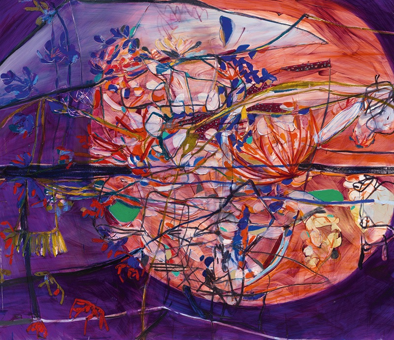
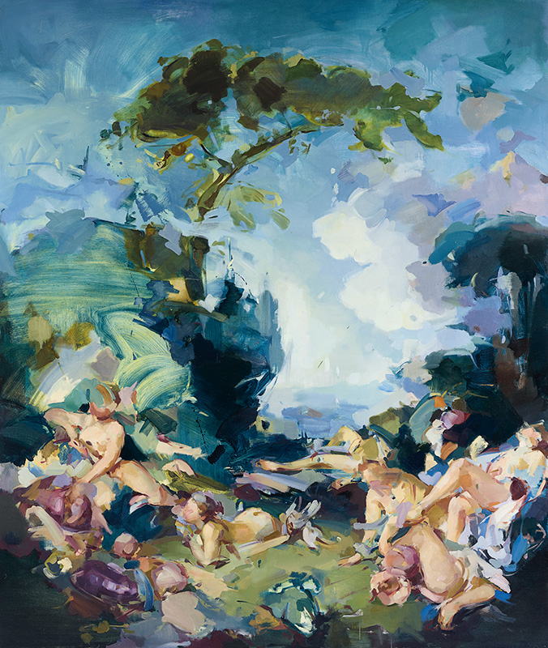
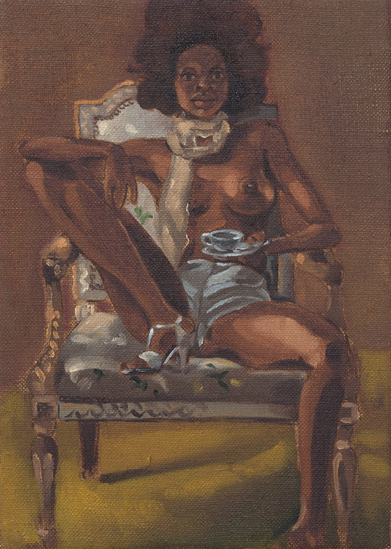

Autonomia, corpo e participação
A autonomia da obra torna-se insuficiente quando matéria, duração e corpo participante passam a constituí-la.
Aula 5 · 29 de agosto de 2026 · 150 minutos
Jadé Fadojutimi · Flora Yukhnovich · Somaya Critchlow
Onde estamos no curso
As Aulas 3, 4, 5 e 6 formam um bloco que desloca a pergunta da obra isolada para as condições de sua presença pública. A Aula 3 examinou como memória, violência e arquivo são materialmente construídos. A Aula 4 perguntou quem pode aparecer e sob quais regimes de imagem, narrativa e instituição.
Agora, a Aula 5 pergunta como a pintura reinscreve essas disputas no tempo: o que acontece quando tradição, cultura de imagens, desejo e escala não ficam atrás da obra, mas passam a operar dentro de sua superfície?
Seis teses de trabalho
A autonomia da obra torna-se insuficiente quando matéria, duração e corpo participante passam a constituí-la.
Autoria é uma posição em disputa, não uma origem individual intacta.
Uma obra crítica não apenas lembra a violência: altera as condições sob as quais ela pode ser vista.
Figurar não é apenas tornar alguém visível: é fabricar as condições de sua presença e autoridade.
A pintura contemporânea não retorna ao passado: faz dele uma força em disputa no presente.
A história da arte é uma infraestrutura que distribui valor, presença e esquecimento.
Proposição de trabalho
Esta aula não pergunta se a pintura sobreviveu ao digital, ao vídeo ou à cultura de telas. Essa pergunta separa os meios antes de observar como as obras os atravessam. Em Fadojutimi, Yukhnovich e Critchlow, tradições, imagens de massa, regimes de desejo, escala e histórias de exclusão tornam-se matéria ativa, instável e conflituosa.
Hessel: “Novas Mestras”
Hessel reúne três pintoras britânicas, nascidas nos anos 1990, “cujo olhar se dirige tanto para o futuro quanto para a história”. O agrupamento reabre uma palavra historicamente reservada ao cânone, mas também precisa ser examinado: que presente geográfico, racial, institucional e pictórico ele seleciona?
Pintura e presente
Para Hessel, as três artistas injetam nova vida na pintura a óleo, confrontam questões contemporâneas e trabalham num mundo repleto de tecnologia. Não há oposição simples entre pintura lenta e imagem digital rápida: videoclipes de R&B, filmes, animes, televisão, publicidade e cultura de telas entram no processo de pintar.
Jadé Fadojutimi

2020.
“Acho que encaro a pintura como uma coisa com vida própria. E eu a invejo, porque ela tem muito caráter.” JADÉ FADOJUTIMI, 2020, citada por Hessel.
“Vida própria” não deve ser psicologizada como extensão da interioridade da artista. Indica resistência material e formal: camadas de cor, ritmo e espessura que não se reduzem a um plano anterior. A pintura pode sugerir planeta, organismo, água, paisagem, noite, visão microscópica ou cósmica, sem se estabilizar numa identificação.
Hessel aproxima a energia de Fadojutimi de Joan Mitchell, Lee Krasner e Helen Frankenthaler, mas afirma que suas pinturas não são estritamente abstratas nem figurativas. A obra pressiona essas categorias por camadas, bastão de óleo, garfos, cabo de pincel, som, atrito e duração. Trilhas de filmes e animes não ilustram o presente: participam da construção da superfície.
“Minhas pinturas parecem ter consciência do presente enquanto colidem com o passado”, diz Fadojutimi, citada por Hessel. A hipótese da aula é que a pintura não representa o presente, mas produz uma experiência temporal sem reconciliação. A linguagem “utópica” usada por Hessel deve ser testada: a abundância de cor pode ser afirmativa, mas também contém colisão, opacidade e fricção.
Flora Yukhnovich
Hessel identifica em Quente, molhado e selvagem uma reencarnação do motivo histórico dos banhistas, entre movimento e quietude, figuração e abstração. A tarefa não é encontrar figuras escondidas: é observar como a cena chega como dispersão de matéria, cor e gesto.
Amarelos amanteigados, rosas cremosos e azuis açucarados associam pintura, consumo, corpo e desejo. A superfície pode operar como prazer visual e como problema de excesso.

2020.
Hessel vincula Yukhnovich ao rococó, às fêtes galantes, a cenas de artistas homens consagrados, a videoclipes de R&B, ao consumo e à mídia hipersexualizada. “A pintura é uma forma de dar sentido às imagens que nos bombardeiam a cada minuto”, diz Yukhnovich, citada por Hessel. Pintura não foge do digital: processa suas imagens como matéria, falha, espessura e tempo.
Uma referência histórica é crítica apenas se altera condições de olhar no presente. A obra dissolve banhistas e erotismo rococó em velocidade e ambiguidade; faz corpo, ar, água e pintura disputarem legibilidade. A comparação com Mickalene Thomas ajuda: Thomas reconfigura uma composição específica; Yukhnovich dissolve um repertório inteiro de atmosfera, charme e erotismo.
Somaya Critchlow

2019.
Hessel observa que mulheres negras nuas aparecem com nobreza comparável às figuras de antigos mestres, em pinturas por vezes “de bolso”. A contradição é decisiva: pequena escala e presença imperiosa. O cânone costuma ligar ambição a monumentalidade, assunto histórico e gesto grandioso; Critchlow concentra autoridade, desejo e história sem competir pelos mesmos códigos.
Critchlow dialoga com paleta, posturas e autoridade dos séculos XVII e XVIII; mobiliza xícaras, relógios, cadeiras e sapatos vitorianos; aproxima antigos mestres de Love & Hip Hop e David Lynch. Televisão, cultura pop, objeto vitoriano e miniatura produzem um tempo espesso. A relação com o cânone não é reverência: é disputa de autoridade numa tradição que reservou nobreza e centralidade a outras figuras.
Comparação
Mundo cósmico e microscópico; cor e textura desorganizam categorias. O presente é colisão com o passado.
Tela, circulação de imagens e excesso; rococó e mídia desorganizam o olhar.
Pintura íntima e concentrada; miniatura e nu deslocam autoridade histórica.
O presente não aparece como data: aparece como problema de escala, circulação e tempo.
Escala não é apenas medida física. Em Fadojutimi, passa entre planeta e célula; em Yukhnovich, envolve a avalanche de imagens e a dimensão da tela; em Critchlow, é intensidade numa pintura pequena. Peça que a turma teste a afirmação de que Critchlow pode ser tão monumental quanto uma instalação em escala urbana.
Pintura e fotografia
Fadojutimi trabalha com som, filmes e animes. Yukhnovich formula a pintura diante de videoclipes, mídia e bombardeio imagético. Critchlow articula televisão, cinema e tradição pictórica. As pinturas não respondem passivamente às imagens técnicas: selecionam, condensam e transformam seus ritmos e desejos.
Seminário de obra
Em grupos, escolham uma proposição e defendam-na com duas artistas:
Escolham um detalhe como evidência: cor, textura, motivo, escala, objeto, referência ou título. A tradição não pode permanecer abstrata. O limite pode recair sobre a própria categoria “Novas Mestras”: ela reabre autoridade, mas concentra um recorte britânico e pictórico.
Síntese e passagem
Jadé Fadojutimi transforma pintura em mundo instável de matéria viva e colisão temporal. Flora Yukhnovich torna rococó, mídia e consumo uma disputa sobre olhar. Somaya Critchlow desloca miniatura, nudez e tradição de mestria para outra posição de autoridade.
A aula não termina ao provar que essas artistas são importantes. Ela pergunta que formas de importância, transmissão, mestria e reconhecimento estão em operação, e quem as define.
Referência e créditos
Leitura-base: HESSEL, Katy. A história da arte sem os homens. Parte Cinco: “As novas mestras” e “Onde estamos agora?”.
Obras: Jadé Fadojutimi, Existe um mundo glorioso. O nome dele? A Terra dos Fardos Sustentáveis (2020); Flora Yukhnovich, Quente, molhado e selvagem (2020); Somaya Critchlow, Figura segurando uma pequena xícara de chá (2019).
As informações, citações e a categoria “Novas Mestras” são de Hessel. As teses, comparações e perguntas de seminário pertencem ao desenho didático da disciplina.